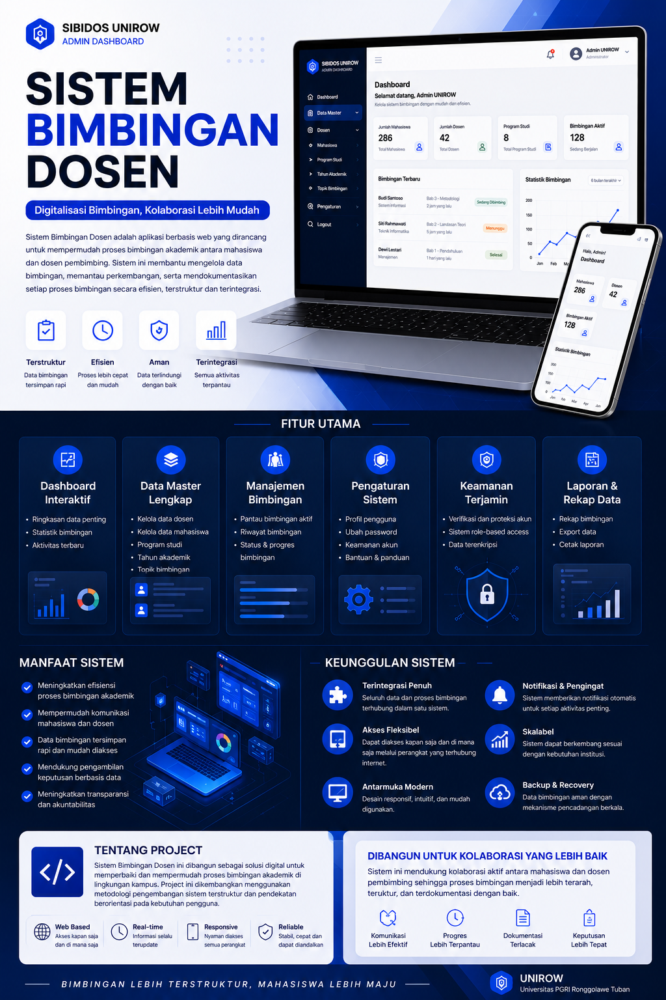
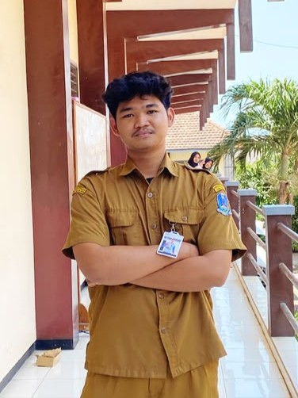
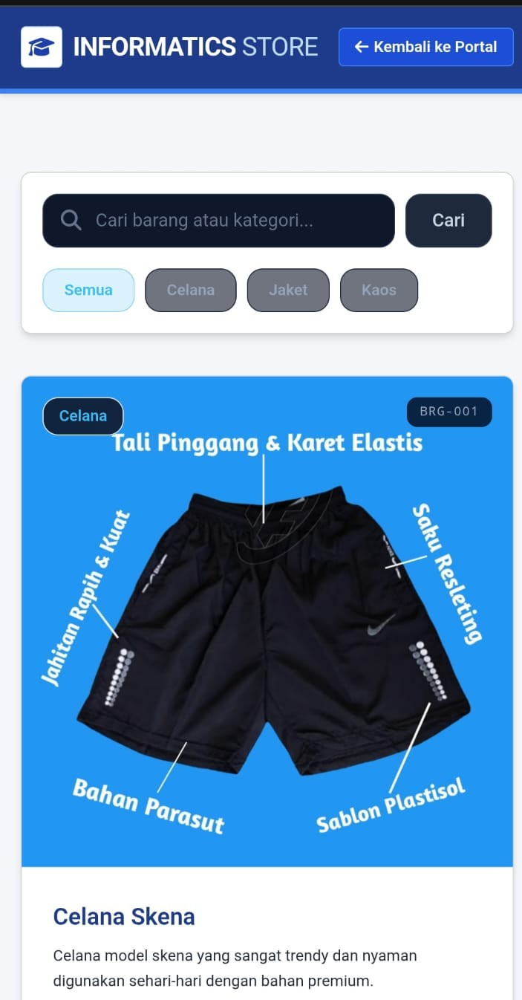
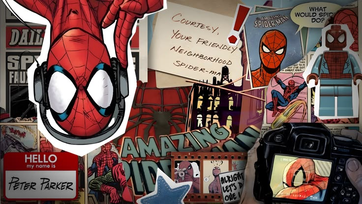

Web AppPembuatan WEB Sibidos
Web/Aplikasi untuk sistem bimbingan Dosen, diperuntukkan Kepada Dosen,Mahasiswa,Dan Admin Prodi
HTML5
Figma
Canva
MySQL
Vscode
Saya seorang mahasiswa yang berdedikasi dan antusias dalam dunia rekayasa perangkat lunak serta pengembangan web modern. Berfokus pada perancangan antarmuka yang bersih, responsif, dan performa kode yang optimal.

Informasi ringkas mengenai biodata akademik, latar belakang, dan komitmen belajar saya di perkuliahan.
Halo! Saya Andrian, seorang mahasiswa yang sedang menempuh pendidikan pada jurusan Teknik Informatika. Sejak awal perkuliahan, saya memiliki ketertarikan tinggi terhadap bagaimana sebuah baris kode dapat diubah menjadi antarmuka visual yang interaktif dan memecahkan permasalahan nyata di masyarakat.
Halaman web portofolio ini saya bangun secara mandiri menggunakan teknologi murni HTML5, CSS3, dan Vanilla JavaScript tanpa bergantung pada framework Laravel. Kode ditulis secara terstruktur, bersih, dan sesuai standar semantik web menggunakan editor Visual Studio Code (VS Code) sebagai pemenuhan Tugas Ujian Tengah Semester (UTS).
Saya selalu bersemangat mempelajari hal-hal baru, mulai dari konsep UI/UX, responsive layouting, hingga logika algoritma pemrograman web modern.
Ringkasan keahlian dan kompetensi yang saya miliki dalam pengembangan web serta teknologi informasi.
Memiliki pemahaman dalam merancang dan membangun antarmuka website menggunakan HTML5 semantik, CSS3 untuk tata letak yang rapi dan responsif di berbagai perangkat (smartphone, tablet, maupun laptop), serta JavaScript untuk menambahkan fungsionalitas dan interaksi pengguna yang dinamis.
Memahami konsep dasar perancangan database relasional menggunakan MySQL, mulai dari pembuatan tabel, relasi data, hingga penulisan query dasar (CRUD: Create, Read, Update, Delete) serta dasar logika algoritma dan pemrograman web.
Terbiasa menggunakan Visual Studio Code (VS Code) sebagai perangkat kerja utama dalam menulis kode program, Git & GitHub untuk pengelolaan versi kode, serta Figma untuk membuat sketsa wireframe dan prototipe desain antarmuka pengguna.
Pengalaman organisasi kampus, asisten laboratorium, kepanitiaan, dan pembelajaran intensif yang pernah saya ikuti.
Bertanggung Jawab Penuh Atas Berjalannya atau Keberlangsungan Program Kerja Internal/Eksternal HIMA-TIF
Bertanggung jawab dalam pengelolaan aset Kewirausahaan Himpunan, publikasi Program Kerja Departemen
Membuat Kepengurusan Baru Setiap Tahunnya,Rangkaian Acara hinggan mencari pendanaan dan Pelaksanaan.
Menjadi Bendahara Pelaksana di Event Besar HIMA-TIF
Kumpulan hasil karya tugas kuliah, studi kasus perancangan, dan prototipe aplikasi yang telah saya kerjakan.

Web AppWeb/Aplikasi untuk sistem bimbingan Dosen, diperuntukkan Kepada Dosen,Mahasiswa,Dan Admin Prodi

Web AppWebsite katalog produk Informatic Store, Produck T-Shirt,Celana,hingga Lanyard Id-Card, Lengkap dengan fitur keranjang hingga Cekout data pembeli

UI/UX DesignPerancangan desain antarmuka Pamflet Mentah to Pamflet Modern,
Latar belakang pendidikan formal serta pelatihan kompetensi yang telah saya tempuh.
Fokus mendalami Rekayasa Perangkat Lunak, Pemrograman Web Berbasis Komponen, Struktur Data, dan Perancangan Basis Data Relasional.
Lulus dengan prestasi baik dan aktif dalam kegiatan ekstrakurikuler Olahraga.
Mengetahui Cara Membuat,Branding,Proses Pembuatan Hingga Proses Siap jual IMPORT/EKSPORT berstandar industri.
Menjadi Volunteer Konser Cerita Nada, mendapatkan posisi sebagai Public Relation
Bapak/Ibu Dosen atau rekan mahasiswa dapat menghubungi saya melalui formulir di bawah ini atau melalui kontak langsung.
Saya siap menerima saran, masukan penilaian tugas UTS, atau peluang kolaborasi dalam proyek Coding selanjutnya.
Mbrauwchannel@Gmail.com
+62 857 8014 4365
Ds.Jenu, Kab.Tuban , Indonesia
Senin - Jumat, 08.00 - 21.00 WIB